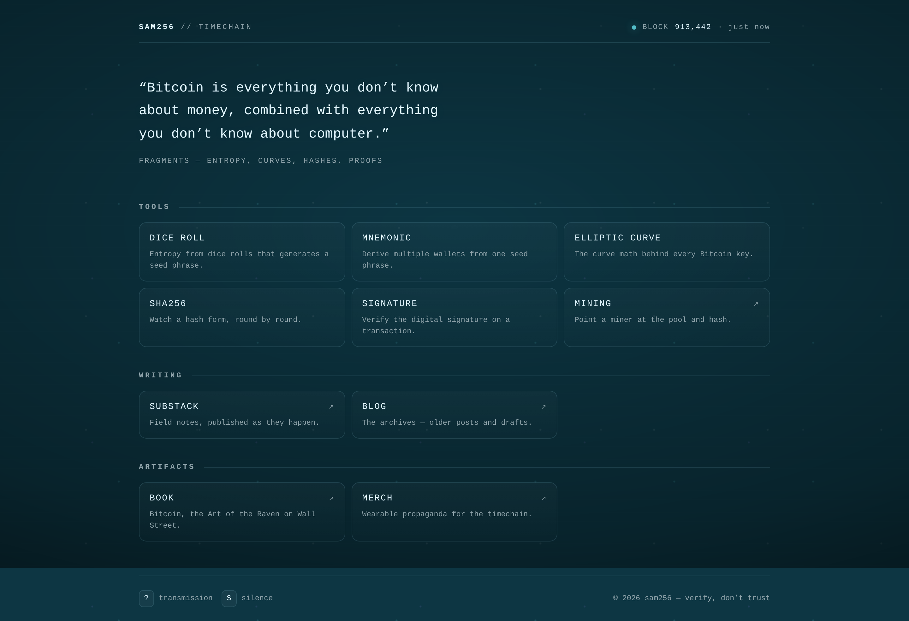
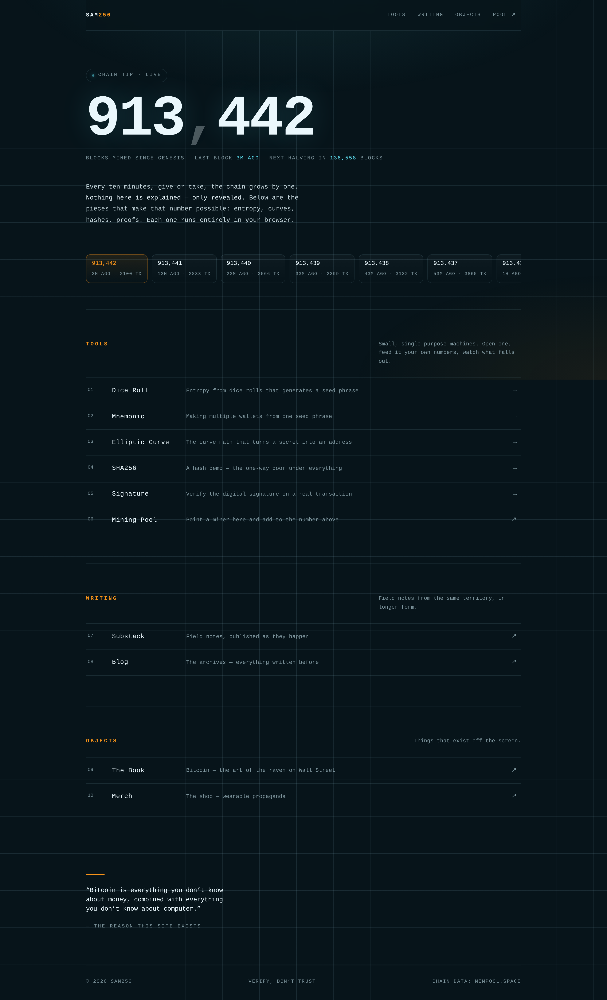
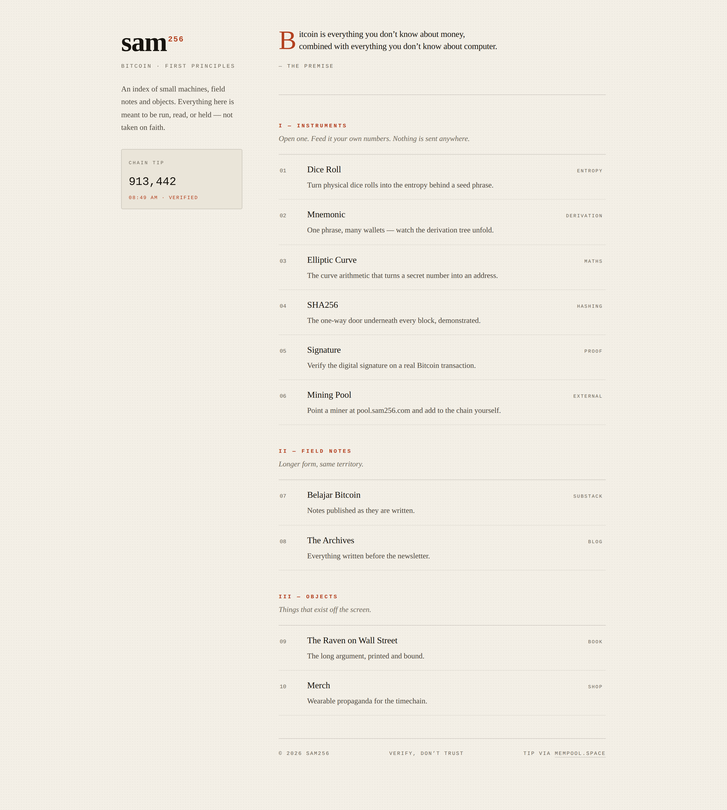

The current site has a strong voice — CRT green-teal, monospace, a live block height, a quote and ten links. The voice is worth keeping; what it needs is structure, contrast and a page that survives a small screen. Below: what I'd fix, then three ways to fix it.
:hover.
Every link has a genuinely useful data-hint — and on a phone, nobody ever sees it. Hover is not an interaction on touch, and it isn't one for keyboard users either.overflow:hidden on body plus an absolutely-positioned link row means that on a short window or a landscape phone, links get clipped with no way to reach them.rgba(181,181,181,.68) over the teal ground measures 3.73:1 against the 4.5:1 floor; the hint line manages 2.44:1, at roughly 9px. Every colour in all three directions below was measured and passes AA.outline:none on every anchor with nothing put back, so keyboard navigation is invisible. The overlay isn't a real dialog either — no focus trap, still tabbable when closed.fetch has no timeout and keeps polling in a hidden tab; the S shortcut fires even while typing; reduced-motion is honoured in CSS but the glitch timer keeps running in JS.
Open Signal →
Open Timechain →
Open Ledger →